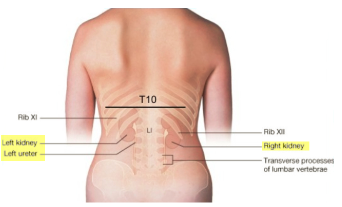

The kidneys are two bean-shaped organs in the renal/urinary system.
They help the body pass waste as urine.
They also help filter blood before sending it back to the heart.
Location

Kidneys are located near the middle of your back, just below the rib cage
Functions
maintaining overall fluid balance
regulating and filtering minerals from the blood
filtering waste materials from food, medications, and toxic substances
creating hormones that help produce red blood cells, promote bone health, and regulate blood pressure
What is Atrophic Kidney?
It is a kidney disorder where the kidneys are relatively small in comparison to the gender, age and body weight of the patient.
Which is also known as renal atrophy.
It is a kidney disorder where the kidneys are relatively small in comparison to the gender, age and body weight of the patient.
Which is also known as renal atrophy.